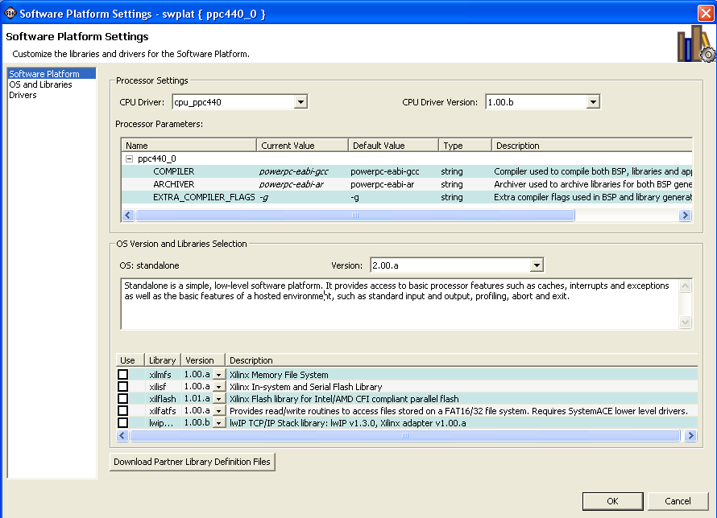
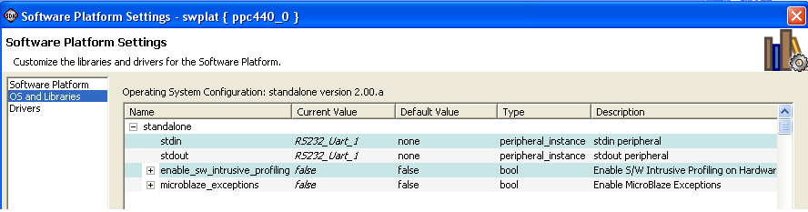
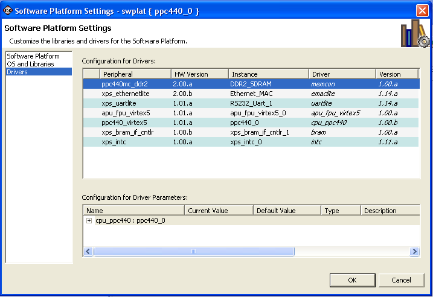

Software platforms
Software repositories
To configure an existing software platform project, in the C/C++ Projects view, right-click on the software platform to configure and select Software Platform Settings. The Software Platform Settings dialog box opens. The dialog box consists of three pages: Software Platform, OS and Libraries, and Drivers.
In the Software Platform page, you can configure basic settings that
apply to the entire platform. This includes the processor-specific
parameters section, which contains settings such as the compiler to be
used and the extra flags that are passed on to the compile line. In
this page, you can also select the OS version and
the OS libraries to be enabled in the platform.

Note: You cannot change the OS choice in this page, since the OS type is determined by the type you chose for the software platform when you created it.
In the OS and Libraries page, you can configure various
parameters of the OS and its constituent libraries.

The Drivers page lists all the device drivers assigned for each peripheral in your system. You can select each peripheral and change its device driver assignment and its version. If you want to remove a driver for a peripheral, assign the driver to none.
Some device drivers export parameters that you can configure. If any driver that you highlight in the driver list has parameters, you can configure them in the Configuration for Driver Parameters section at the bottom of the window.

You can cancel out of the dialog at any time. If you are done with all the settings you want to make, click OK and your changes are committed.
If the Build Automatically option is selected in the Project menu, your software platform is rebuilt with your new settings applied.
Note: The exact list of software components appearing in the Software Platform Settings dialog box depends on the components available in the SDK install, as well as the list of components found in any software repositories that are set up in your workspace. For information about how software repositories work, refer to Software repositories.

Software platforms
Software repositories

Building a software platform
Setting up software repositories
Creating a C or C++ project

Software Platform Settings dialog box
Copyright © 1995-2009 Xilinx, Inc. All rights reserved.